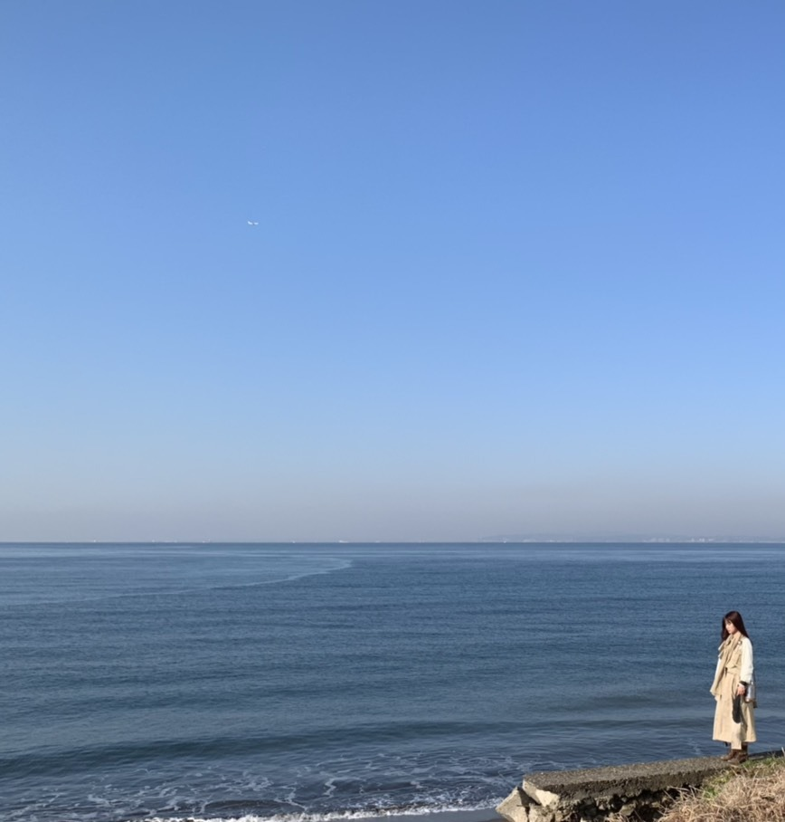
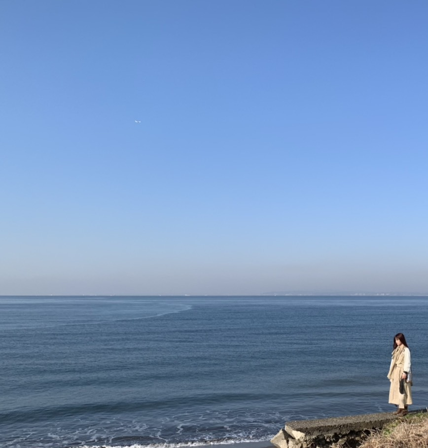

2021/0506Thuスイートピー
大人しい私に
陽気さを与えてくれました。
軍団結成当初
自分の明るい面を表現するのが
難しい時期がありました。
初めは恥ずかしいと思う事も
軍団の活動に沢山ありましたが
琴子も
かりんちゃんも
松村さんも
みんなそれぞれに陽気な人で
かなさんも勿論
親衛隊とされるメンバーの皆さんや
さゆりんご軍団に関わる全ての人が
何故か松村さんと居ると
いつもより笑顔や笑いが多くて
私はその明るさに沢山のことを学びましたし
沢山沢山楽しい思い出も出来ました。
卒業発表という大切な瞬間に
呼んでくれた事何より嬉しく思います。
送り出すのは寂しいけど
笑顔の似合う松村さんですし
卒業は前向きな
大きな明るい一歩だと思っているので
きっと残りの時間は更に楽しい事
いっぱいあると思いますので
楽しんでいきましょう。
LIVEも決まりましたし凄いことですよね。
ユニットでのLIVEなんて異例ですよね。✨
自分は色んなユニットに参加していますが
改めて凄いなーと
他のユニットでもいつかLIVE出来たらいいですね。
今年もあっという間に5月です。
松村さんとも出来るだけ一緒に居たいです。☺️✨
沢山成長したからこそ
感じることが沢山あって
だからこそ生まれる感情があります。
それらは捉え方や感じ方人それぞれ違うから
分かち合う事はとても難しい事だと思います。
だから、私自身もどんな言葉を綴ればいいのか
どんな言葉を綴っても正解がなく
そして捉え方も人それぞれで
解釈がまったく異なるので
毎回ブログを書くのは難しくて
怖くて不安になったりもします。
私としてはどんな環境にいても
自分らしさを大切に日々を過ごしてきました。
やってきた事と
それを見て応援してくれる人やあたたかい言葉
それだけがずっと私の心の支えです。
誰にでも大変な事があり悩む事もあると思います。
私自身も人間なのであります。
でも、それは成長し続けている証だと
自分を認めてあげたいですし
皆さんも是非自分を大切にしてあげてください。
とにかく人に感謝して
大切なものを優しく抱えて感謝して
毎日胸を張って人生を楽しみたいです。✨
最近ファンの人と直接会う機会は
なかなかありませんが元気にしていますか。？
会えなくても声は
皆さんが思っているよりも
私には届いています。✨
久々に真面目な話をさせて貰いましたが
なにを伝えたいかと言うと
皆さんには自分を大切にして欲しいと言うことと
私は沢山素敵な人達に出逢えて幸せですということ
コロナ禍でなかなか明るいニュースを
届けることが難しくてもどかしいのですが
これからもお互い楽しい日々にしましょう。☺️✨
これが伝わってくれれば何よりです。
皆さんの事
人として友人として大切に思っています。
ひとまず、ミーグリにも参加してますので
宜しくお願い致します。☺️✨
ライブも決まりました。
陽気さを与えてくれました。
軍団結成当初
自分の明るい面を表現するのが
難しい時期がありました。
初めは恥ずかしいと思う事も
軍団の活動に沢山ありましたが
琴子も
かりんちゃんも
松村さんも
みんなそれぞれに陽気な人で
かなさんも勿論
親衛隊とされるメンバーの皆さんや
さゆりんご軍団に関わる全ての人が
何故か松村さんと居ると
いつもより笑顔や笑いが多くて
私はその明るさに沢山のことを学びましたし
沢山沢山楽しい思い出も出来ました。
卒業発表という大切な瞬間に
呼んでくれた事何より嬉しく思います。
送り出すのは寂しいけど
笑顔の似合う松村さんですし
卒業は前向きな
大きな明るい一歩だと思っているので
きっと残りの時間は更に楽しい事
いっぱいあると思いますので
楽しんでいきましょう。
LIVEも決まりましたし凄いことですよね。
ユニットでのLIVEなんて異例ですよね。✨
自分は色んなユニットに参加していますが
改めて凄いなーと
他のユニットでもいつかLIVE出来たらいいですね。
今年もあっという間に5月です。
松村さんとも出来るだけ一緒に居たいです。☺️✨
沢山成長したからこそ
感じることが沢山あって
だからこそ生まれる感情があります。
それらは捉え方や感じ方人それぞれ違うから
分かち合う事はとても難しい事だと思います。
だから、私自身もどんな言葉を綴ればいいのか
どんな言葉を綴っても正解がなく
そして捉え方も人それぞれで
解釈がまったく異なるので
毎回ブログを書くのは難しくて
怖くて不安になったりもします。
私としてはどんな環境にいても
自分らしさを大切に日々を過ごしてきました。
やってきた事と
それを見て応援してくれる人やあたたかい言葉
それだけがずっと私の心の支えです。
誰にでも大変な事があり悩む事もあると思います。
私自身も人間なのであります。
でも、それは成長し続けている証だと
自分を認めてあげたいですし
皆さんも是非自分を大切にしてあげてください。
とにかく人に感謝して
大切なものを優しく抱えて感謝して
毎日胸を張って人生を楽しみたいです。✨
最近ファンの人と直接会う機会は
なかなかありませんが元気にしていますか。？
会えなくても声は
皆さんが思っているよりも
私には届いています。✨
久々に真面目な話をさせて貰いましたが
なにを伝えたいかと言うと
皆さんには自分を大切にして欲しいと言うことと
私は沢山素敵な人達に出逢えて幸せですということ
コロナ禍でなかなか明るいニュースを
届けることが難しくてもどかしいのですが
これからもお互い楽しい日々にしましょう。☺️✨
これが伝わってくれれば何よりです。
皆さんの事
人として友人として大切に思っています。
ひとまず、ミーグリにも参加してますので
宜しくお願い致します。☺️✨
ライブも決まりました。
この状況下でも開催という奇跡。
お時間ありましたら是非、お付き合い下さい。
皆さんも自分の気持ちを大切に
ちゃんとご飯と睡眠と栄養とって
大変なご時世で
先が見えないからこそすごく不安にもなりますが
色々と乗り越えていきましょう。
私、本日2021/05/06は
ちゃんとご飯と睡眠と栄養とって
大変なご時世で
先が見えないからこそすごく不安にもなりますが
色々と乗り越えていきましょう。
私、本日2021/05/06は
お披露目から8周年
デビュー8周年を迎えました。
幼い私にはこんなに先の未来想像している
暇すらなくて
日々がむしゃらに歩いたり走ったりしていたら
こんなに大きくなりました。☺️
と言えどまだまだ若く
もっと経験したいこともありますし
もっと沢山の人と出逢いたいです。
これからも是非仲良くしてください。
今年も沢山楽しい事いい事がありますように。✨
髪切りました、、、
嘘です、、、
せっかく、8周年なので
昔の画像探してInstagramのストーリーの方に
載せようと思っています。
よかったら是非、チェックしてください。✨
最後まで読んで下さり
ありがとうございました。☺️✨
デビュー8周年おめでとう私。☺️✨
また、ブログ更新します。！


2021/05/06 13:12


コメント(1282)
またしっかり読んでコメントするねー！
インスタいつも見てるよー
デビュー8周年おめでとう！これからも応援し続けます( ◜◒◝ )
久しぶりのブログでとても嬉しいです。
さゆりんご軍団もアンダラも楽しみにしてます。
らぶです
ミーグリで祝うよ
ワクワク
お披露目8周年おめでとうございます！
モバメでお祝いしてーと言ってたのでお祝いしますよ！
さゆりんごライブ アンダーライブ
どっちも楽しみです。
ミーグリも買ったので会いましょう！
いつもありがとう
ユースケ
デビュー8周年おめでとうっ。
そうね。さゆりんご軍団の軍団員はみんな陽だね。
ライブも楽しみにしてるねっ。
モバメで祝って言ってたからここで言うね！
おめでと！！
お試し中いつも楽しんでみてる！！
どんな髪でも蘭世は可愛い
まってぃん(りょうた)より
ブログ更新ありがとう！！！！！！
アンダーライブ楽しみにしておりますね！
いつもモバメもありがとう～～
軍団長への想い伝わりました。
ライブも楽しみに待ってます！
一緒に頑張っていきましょう！
アンダラも軍談のライブも
めっちゃ楽しみやし、蘭世すげー！って思った！改めて自慢の推しだなあと。いつもありがとう。
時間は有限だね、楽しもう
蘭世、デビュー8周年おめでとう！！
お試し中毎回楽しく見させてもらってます！蘭世のショートもこれからありかも！？と思いました！
蘭世の自撮り大好きだよ！Instagramにどんどん載せてね！待ってます！
蘭世ちゃんブログ更新ありがとう！！！
デビューとお披露目8周年おめでとう！(^^)
今年もお祝いできて嬉しいです！
Twitterでお祝いしたよ〜！！！
今シングルのミーグリたくさん買ったよ！
たくさんお話しできるの楽しみにしてます(^^)
今シングルもたくさん好きって伝えれるように頑張るよ！！！
さゆりんご軍団のLive決定おめでとう！
ずっとずっとずっと待ってたから配信見てて涙が出るほど嬉しかったよ。それと同時にまつの卒業発表でボロボロに泣いちゃいました。軍団のメンバーをみんな送り出していく蘭世ちゃんのことも考えて、おめでたいし笑顔で送り出したいけど複雑で涙が止まりませんでした。
それでも、その日まで楽しもうってこれからも蘭世を全力で好きでいようって改めて思わせてもらいました。
どの立ち位置でも、あいらにとって蘭世が1番輝いているし大好きです。それは絶対に変わりません。乃木坂にいる蘭世を好きになったけど、今は寺田蘭世のことが人として大好きです。
だからこれからも末永くよろしくお願いします。(^^)
蘭世を好きになってよかったって心から思えるよ。！
こんなだけどずっと大好きです！
伝われーーーーーーーー！！！！
これこらも体調には気をつけてね！
いつも幸せと笑顔をありがとう。！
あいら
蘭世は本当にメンバー想いでいい子だなと感じます
メンバーで切る子が多いのでロングで通してほしいですがウィッグなどでイメチェンはするのもよきよきですね
そして御披露目から8周年おめでとうございます。
めでたいです。
これからも蘭世らしく坂を駆け上がってほしいです。
インスタもお待ちしております。
１年１枚８年で８枚とかだと成長が感じられるかもしれないですね
また更新お待ちしております。
そしてデビュー8周年おめでとう！
蘭世のことをちゃんと知ったのは4年くらい前だけどこんなにずっと蘭世のこと好きでいれてよかった！
さゆりんご軍団のライブもアンダーライブも絶対に見るからね！
どっちのリハも大変だと思うけど頑張ってね！
これからもずっと応援し続けます！大好き！
まず、お披露目、デビュー8周年おめでとう！
毎年思うけれど、8年前から蘭世のことを知れていたらよかったのになってすごく思うよ。でも、ついこの間蘭世を推し始めて1600日が経ったよ〜またこのお話はミーグリで話したいな。
そしてそして、さゆりんご軍団ライブすごく楽しみです楽しみにしすぎてます。アンダーライブも発表されたね。楽しみが増えて嬉しいです
蘭世にはいつも元気もらってます、私も蘭世のように自分らしさを大切に過ごしていこうと思う！！
今年は受験生でさらに不安なことが増えるけれど、これからも蘭世を支えとして頑張っていく！
今年は勉強でけじめをつけようと思ってミーグリは7月4日のみ券取ったよ〜。3月のミーグリでは、今年は受験生だからもう会えないかもしれないという話をしたけど、どうしても1回は話したいなと思って1日だけ券取りました 7月4日が楽しみで仕方ないよーお話出来ることたくさん考えておくね
今日も1日おつかれさま〜明日からも頑張ろうねダイスキです
これからもずーっと応援してるよ！！
軍団ライブも楽しみにしています（˶ᵔᵕᵔ˶）
さゆりんの卒業発表の場面に蘭世ちゃんが居てくれて
さゆりんも本当に心強かったと思います。
さゆりんとの想い出沢山作ってね。
夢の軍団ライブ本当に楽しみにしています。
そして8周年おめでとうございます。
長いようであっという間で…ほんと色々ありましたね。
これからも沢山の蘭世ちゃんを楽しみにしていますよ。
蘭世ちゃんの"自分らしさ"が大好きです。
これからも真っ直ぐ突き進んで下さい。応援しています
ブログ更新ありがとー！
まちゅへの気持ち、たくさん聞けてよかったです！
ありがとう！
そっか！もう5月だからあと1ヶ月なのか！
楽しみにしてます！
それでは！
今回も素敵なブログをありがとう！
これからも応援してます！
デビュー8周年おめでとうございます♡
蘭世ちゃんの言霊はすごく大きな力を持っていると思います。
いつまでも応援しています♪
私は2019年4月のブログのユニバに行った時の蘭世ちゃんと、2018年10月のブログに上がってた、黒地に赤いハートが散りばめられたワンピースを着て一輪のバラを持っている写真が好きです！
蘭世と出会えてよかった
こんなに乃木坂を好きになれたのは間違いなく蘭世のおかげ。
もうほぼ1年半くらい会えてないし、いろいろ変化があったけど、僕の気持ちに全く変化はないです。ずっと大好きです。
僕は元気ですよー
もちろん僕自身、自分のことを大切に思っているけど、いつもファンのことを考えてくれる蘭世。そんな蘭世のことを自分より大切に思わせてください。
僕も蘭世のことが大好きです。
9年目も何卒。
蘭世ぴんこそ自分を大切にしてくださいね
ファン思いな蘭世ちゃん大好き！！！
8周年おめでとう。
デビュー8周年おめでとう！！
これからもずっと応援してるよ！！
アンダーライブもめっちゃ楽しみ！！
芯のある心とお洋服や、独特な言葉遣い、ボブマーリーを聴くらんぜ先生はとても素敵です。
お身体にはお気をつけてこれからも活躍楽しみにしています。
僕は蘭世さんに3年前に出会ってこんなに自分の意思を強く持って決してその思いを曲げることない情熱的なアイドルを初めて見ました！！
そんな蘭世さんそしてファンのことも考えてくれる蘭世さんが大好きです！
そして、さゆりんも卒業発表しましたね
蘭世さんも純奈ちゃんと同じく1人になってしまうんですね
でも、さゆりんご軍団でライブできること初めて5人でライブできること凄く嬉しいです！！
今の状況から見て有観客でできるか分からないと思いますけどさゆりんご軍団のライブ、さゆりんとのライブ楽しんでください！！
僕は蘭世さんの9周年も10周年もお祝いし続けます！！
蘭世さんは僕永遠の推しです！！
想いの詰まった内容でファンとしても嬉しい気持ちになりました
蘭世にとって僕達の言葉が伝わってるのと同じで
逆に蘭世の言葉、想いもちゃんと伝わってるよ！
こんなご時世だからこそブログや雑誌のインタビューの一文字一文字、SNSの写真一枚一枚の意味を強く感じてる
8周年おめでとう！
これからもどうぞよろしくお願いします！
また笑顔で会える日を！
デビュー8周年おめでとうございます。
乃木坂の一員になってくれて本当にありがとうございます。
蘭世ちゃんがいる人生で、今楽しめていることがすごく嬉しいしありがたいと思っています。
出会ってくれてありがとう！！
まっちゅんと残り少ない時間にはなるけど笑顔で楽しく過ごしてください。さゆりんご軍団ライブがとても楽しみで仕方ないです！！
勿論アンダーライブも楽しみにしています。
最後にはなりますが、蘭世ちゃんいまから忙しいかなと思いますが、身体には気をつけて頑張ってください。
応援しています。
またミーグリでお話しできるのを楽しみにしてます！
ブログ更新ありがとうございます。
デビュー8周年、おめでとうございます！！！！
いつも元気もらってます。ありがとうございます。これからもよろしくお願いします。
さゆりんご軍団、大好きです。
軍団ライブ、本当に楽しみです。
あ、そうそう、モバメで仰っていた過去の写真ですが、2019年の10月30日のブログにあげている、青いシャツのコーデがとってもとっても好きなので、また見てみたいです！他にもみたいのいっぱいあります！！！！
そして、今週のらじらーも楽しみです〜！！！またね〜！
した時、しんみりするのが嫌で
「卒業するんですぅ～」って言って、笑
わしてくれたんだって？
ほんとに気ぃつかいだよね。
きっと、さゆりんご軍団の結成も
らんぜちゃんの言うように、まだ慣れな
い２期生に居場所を与えようとしてくれ
たのかなぁって。
どんな形にせよライブ楽しみです。
らんぜちゃんも軍団長のマインドを受け
継いで、ファンに接してくれて嬉しいで
す。
デビュー８周年、おめでとう。
乃木坂のファッションリーダーとして、
やること山積みよ。
ranzegramやranzemailを通して元気をもらってる自分はほんと幸せ者です☺︎
いつもありがとうございます！
これからも応援してます ✌️
#寺田蘭世お披露目8周年
#寺田蘭世デビュー8周年
蘭世らしさが大好きです！
ミーグリ楽しみです
デビュー8周年おめでとうございます！！！
僕は蘭世さんのファンになってから歴は浅いですが、どんどん蘭世さんの魅力に惹かれていくばかりです！！
これからも大変なことはあると思いますが、体調に気をつけて頑張ってください！！
ファンの端くれの自分ですが応援してます！！！！
最後にひとつお願いを聞いて欲しいです。
【⠀インスタライブやってほしいです！！】
自分を大切に…心温まる言葉ありがとうございます。言葉って難しいですよね。蘭世さんの言う通り受け止め方は人それぞれ。
でも言葉って大切だと僕も思います。少なくとも僕は蘭世さんの言葉で元気になります。
これからも応援してます。頑張って下さいね。
さゆりんご軍団のライブ楽しみです！
お試し中、見てます
MC面白い！
アンダラ
絢音さんとのアレをリクエストしときました
いつもブログが更新される度に熱い想いが凄く伝わってくる！
このコロナ禍でも配信Liveや、ミーグリが開催される事に我々ファンとしては感謝しかないよ！
だからこそ「直接会えなくても皆さんの声は届いている」この言葉に胸打たれた‼︎気付かされた
ありがとう
周年おめでとう
これからもずっと蘭世ちゃんらしくいて下さい！
そしてこれからもずっとあなたのファンでいるよぉ〜
蘭世ちゃんが頑張ってるから、私も頑張れてます
いつもありがとう、！
お疲れ様です。
乃木坂の蘭世、お誕生日おめでとうです
何となくじゃなく、ちゃんと自分の意志を持っていろんなことに向き合っている蘭世が大好きです。
いつまでも変わらず変化していく蘭世を見せてくださいね。
昔の写真、これまでのMVでのメンバーとのオフショットとか見てみたいです。
滑走路は特にですね。
自撮りももちろん嬉しいし、たくさんよろしくです。
これからも寺田蘭世を楽しませてくださいね。
またね
反乱軍のスパイとしてファーストオーダーに
追われながら、応援している
まさとです
デビューしてもうかなりの何月が経つのですね
見事に美しい女性に成長しましたよ
なかなかライブや握手会で直接応援することが
できませんが蘭世の活躍をこれからも
見守っていきたいと思います
Instagramに載せる写真のリクエストですが
研究生から昇格した時期の写真はありますか
自分がちょうど蘭世の撮影会に参加した頃
あたりの写真があればぜひ見たい
自分の撮った写真と比べたいです
ぜひお願いします
いつも素敵なモバメありがとう
ではまたねバイバイ
あ、そうだ5月31日が自分の誕生日です
素敵なモバメ待ってます
コメントする